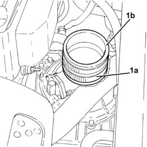

1048A39 HOSE from air filter to rigid pipe - R.R.
- Path
- Procedures > 10 ENGINE > 1048 ENGINE AIR SUPPLY CIRCUIT > 1048A vacuum air circuit > 1048A39 HOSE from air filter to rigid pipe - R.R.
- Kind
- repair procedure (removal / refitting; the operation number is the code)
- Applies to
- engines: 2.0 JTS, 2.0 JTS; all production periods
- Interactive page
- https://sloeber94.github.io/elrnDB-a156/en/#/3237726
Applies to: engines: 2.0 JTS, 2.0 JTS; all production periods
 Removing
Removing
 Refitting
RefittingProceed with removal 1048A59 PIPE from flow meter to throttle casing hose - R.R. .
1. Loosen the band (1a) and remove the hos from the air filter to the rigid pipe (1b).

Applies to: engines: 2.0 JTS, 2.0 JTS; all production periods
Refitting
RemovingPlace the hose from the air filter to the rigid pipe back in its housing and tighten the band.
Proceed with refitting 1048A59 PIPE from flow meter to throttle casing hose - R.R. .